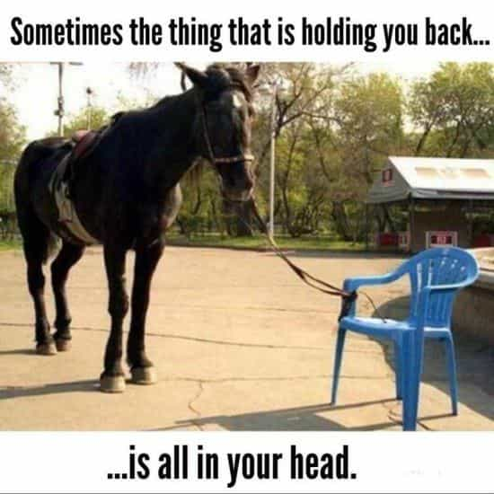
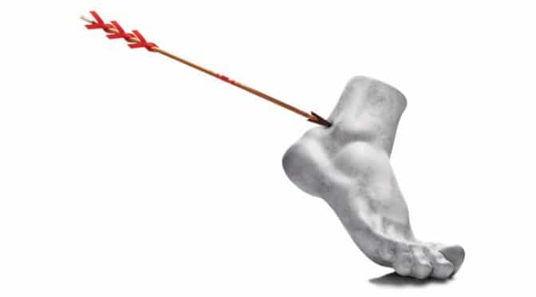

Corey is an iconoclast and the author of 'Man's Fight for Existence'. He believes that the key to life is for men to honour their primal nature. Visit his new website at primalexistence.com


With our society doing everything it can to keep men down and prevent us from reaching our full potentials, it has become more imperative than ever to learn how to overcome this detrimental influence. The modern world that we live in needs men to be domesticated, weak, and controlled so that women, the state, and the elites can gain in power and wealth at our expense. Towards realizing this project, it induces learned helplessness using social institutions, the media, and the cultural currents to crush men’s spirit and decimate any sign of masculinity. Here are practical methods you can use to fight back against the forces that undermine you as a man.

First thing you need to do is to understand the psychology behind learned helplessness. Learned helplessness happens when you are trapped in a situation where all your efforts to escape from it has resulted in failure. Those repeated failures will discourage you from taking any future actions as an evolutionary response to help you preserve energy for a better opportunity that may come in the future (or for someone to come and rescue you). The thing is, while this psychological mechanism may be helpful in nature, our modern society has a way of triggering learned helplessness through artificial means. For example, experiments have shown that dogs who have been conditioned to feel hopeless about their chances of escaping electric shocks in a cage will not even make the attempt even when they are physically capable of doing so.
The same happens to the average man in Western society, where he is made to sit down and obey in a controlled environment starting from his childhood. He is to do as he’s told and submit his masculinity to service the interests of women and the state. He is shamed, belittled, and attacked by the society around him to feel guilty about being a man. His very existence must be discouraged to allow the engineered society to flourish while he suffers.
It’s a deadly cycle.
The consequences of learned helplessness are that you stop trying, you start rationalizing and blaming to preserve your ego, you find scapegoats to take out your frustrations on, you numb yourself with distractions, you fall into a cycle of negativity, and you start to feel angry and depressed about your life situation. The worst part is, most men who are inflicted with this syndrome are completely unaware of it and are in denial. It takes a real man to admit that he’s stuck in a rut and that he needs to kick himself in the ass to get going again.

Now that you know what learned helplessness is, the next step is for you to uncover the source of your problem. Identifying your weakness alone isn’t going to solve the issue on its own, but it will help you deal with it. Try to be as specific as possible in identifying exactly what makes you feel so powerless and why. Discover your root fear, investigate why you feel angry, decipher your thought process, and recognize the self-fulfilling cycle of defeatism that you trap yourself in. There is no judgment here. This is simply a chance for you to become aware of your motivations and inner workings in the face of your situation.
At this stage, it’s important to notice how addictive it is to justify your position as being unchangeable. By telling yourself that you’re in the situation you’re in now because of the injustice of the world can make you feel righteous. It starts to become intoxicating as you see yourself as a tragic hero who endures the wrongs thrown at you. Taken too far, you’ll start to come up with justifications as to why you don’t try to change things anymore. You’ll start to feel comfortable in the negativity. You must snap out of this.
Before you motivate yourself into making an effort again, it’s important to take care of your internal state first. You must learn to let go. Let go of all the anxious longings and desperate wants that will only leave you fragile.
Know that you don’t need desire to gain success; success comes with action. The thing is, desire can either help you with that action or hamper it. If you are inexperienced and suffer from learned helplessness, it usually hampers you more than it helps you. So what should you do, you ask? You must let go of that desire from within. One technique I recently learned for letting go is to simply take a deep breath to release any tension so that you’ll be grounded in the present moment—no fancy mantras required. Just be aware of your inner desire and make the conscious decision to let go for your own sake.
You can also try using a technique by Napoleon Hill who suggests imagining yourself already having achieved whatever it is that you desire. He doesn’t really explain the psychology behind it, but I am confident that it is a way of reducing the anxiety that comes with scarcity that obstructs your ability to take decisive action.
Now, some of you may become resistant to the idea of letting go of desire. You may wonder if surrendering your want is the same thing as giving up and conceding defeat, which is what I used to believe as well. But to the contrary, learning to let go will actually help you. To understand, know that your desire is not the same as your passion. And that to succeed, what you need are discipline, dedication, and organization, not mere wants and wishes. Millions of people who merely dream and hope without any accomplishment are a proof to this fact.
With learned helplessness, it’s critical that you gain your sense of power back by doing things that restores your belief in your own abilities. You may be inclined to tackle that big goal you have in mind that you’ve been putting off since forever, but your best bet is actually to start with something small. You’ve been procrastinating precisely because the thing you want to accomplish is too large for you to tackle, so either break it down into manageable chunks or do something easier to get you into a momentum. Once you are able to accomplish the smaller objective, you’ll have the confidence and the motivation to go for a larger goal. You can continue on and build on your success to do greater and greater things.

When you suffer from learned helplessness, you’re much more likely to blame others, make excuses, and give up without even putting in any real effort. And the most visible symptom of this condition is just how often you tell yourself and others that you “can’t.” But behind every can’t there is fear, insecurity, poor planning, a lack of will, and endless excuses.
If you were to closely investigate your can’ts, you’ll discover that it is usually a matter of “I won’t” rather than “I can’t.” Lack of action is a choice you make on your part, not a physical restriction. Try it yourself by countering all your can’ts by asking yourself “why?” over and over again until you get to the bottom of the issue that will uncover the harsh truth. And if you ever encounter an obstacle that is too big and seemingly impossible, follow the previous advice about breaking down your goal into a manageable chunk or focus on something smaller that you can manage. As for matters you have absolutely no power over, you’ll have to develop the wisdom to recognize them and forget about them.
“Why are you losers making such a big fuss? I don’t even have to make an effort to get a line of women begging for a chance to suck my dick.”
Any man who brags about his exploits, social status, or material wealth is not interested helping fellow man and is only interested in feeding his own ego at your expense. It’s not like they’re obligated to help you out for nothing, but if they’re not offering anything useful and is mocking your efforts in any way, you don’t have any reason to take their shit.
You’ll often hear them say things like, “men today are such pussies” (meaning they’re so much better than the other men) and say generally disparaging remarks about men in general, or casually mention how it’s so easy for them to attract gorgeous women (because they’re such alphas). This is nothing but their attempts at alpha-signalling much like how modern women use the social media to attention-whore. Instead of paying attention to these men who are begging for your recognition, it’s best to take advice from those who have been in similar circumstances as you and have overcome it. Those are the men who can give you practical and actionable advice to help you escape your trap and improve yourself.
Now, on the flip side, you have men who will hate you for trying because they aren’t—it reminds them of their own shortcomings and the fact that they have essentially given up. The obvious example here are the loser men who insult others for trying to form relationship with women by calling them “pussy beggars.” Because the men who make the effort and become successful remind them of their own failures, the only thing these losers can do is to attack others and hope that they fail too. Ignore these men and let them stew in their own misery.
Trying to flip the script on learned helplessness is not an easy task and it will take many failures and trying to start seeing results. As I’ve said, try to focus on the smaller victories to get the momentum going and don’t ever give up. If you need a bit of motivation, imagine meeting your future self face to face. How will you answer to him? Put in the effort now to make him proud that you gave your best when you had the chance; don’t disappoint him that you didn’t start taking action now. You owe it yourself.
To learn more about the ways in which men struggle against the current of our modern world, read ‘Man’s Fight for Existence‘, the ultimate manifesto for our times’
Read More: Powerful Men Who Were Undone By Weakness